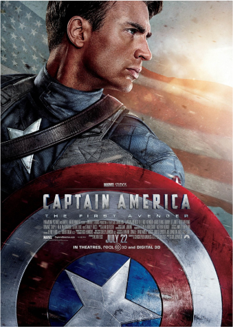
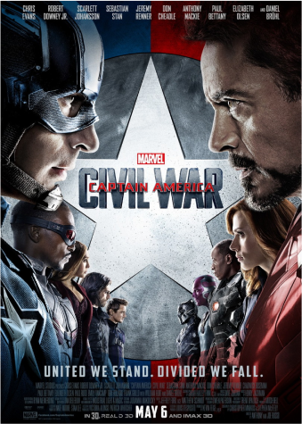
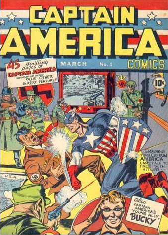
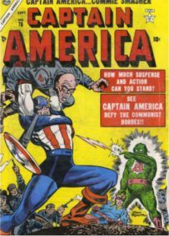
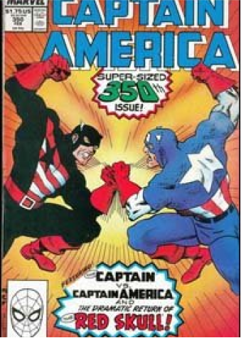

Capitão América
Steve Rogers
Filmes


História
O Capitão fez parte de um movimento patriota que trazia super-heróis, principalmente, atuando na Segunda Guerra Mundial.
Seu sonho era servir os Estados Unidos na luta contra os nazistas. Mas, ele só conseguiu suas habilidades graças aos efeitos do soro de Supersoldado. Onde ganhou músculos e alta estatura, quase que imediatamente...
Idade do Capitão América
Coloque o ano que você deseja saber qual idade o Capitão teria.
Quadrinhos


